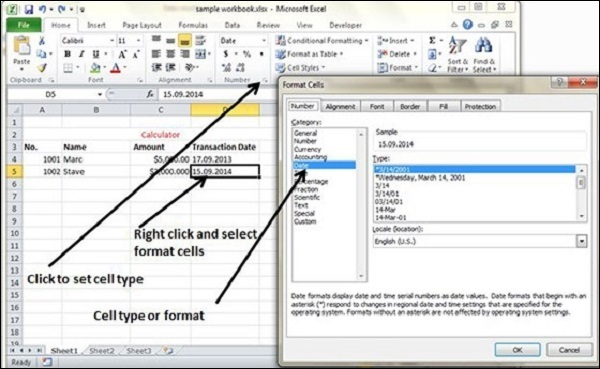

MS Excel Cell can hold different types of data like Numbers, Currency, Dates, etc. You can set the cell type in various ways as shown below −

Below are the various cell formats.
General − This is the default cell format of Cell.
Number − This displays cell as number with separator.
Currency − This displays cell as currency i.e. with currency sign.
Accounting − Similar to Currency, used for accounting purpose.
Date − Various date formats are available under this like 17-09-2013, 17th-Sep-2013, etc.
Time − Various Time formats are available under this, like 1.30PM, 13.30, etc.
Percentage − This displays cell as percentage with decimal places like 50.00%.
Fraction − This displays cell as fraction like 1/4, 1/2 etc.
Scientific − This displays cell as exponential like 5.6E+01.
Text − This displays cell as normal text.
Special − Special formats of cell like Zip code, Phone Number.
Custom − You can use custom format by using this.